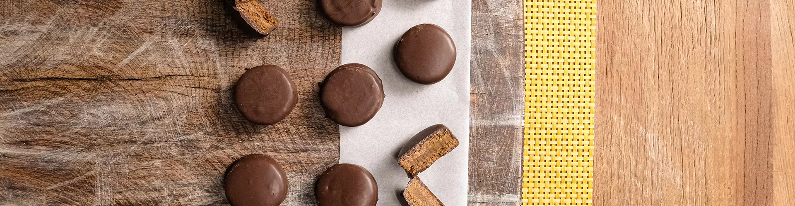

Doce tipo argentino com recheio de doce de leite,
preparado com Biscoito Recheado.

Modo de preparo
1 Pegue os biscoito e abra em duas partes e recheie com doce de leite.
2 Derreta o chocolate e banhe os alfajores. Coloque sobre o papel manteiga e leve para gelar para gelar até que o chocolate endureça.
Receita:
Clique para ver o video da receita
Voltar para a lista de receitas